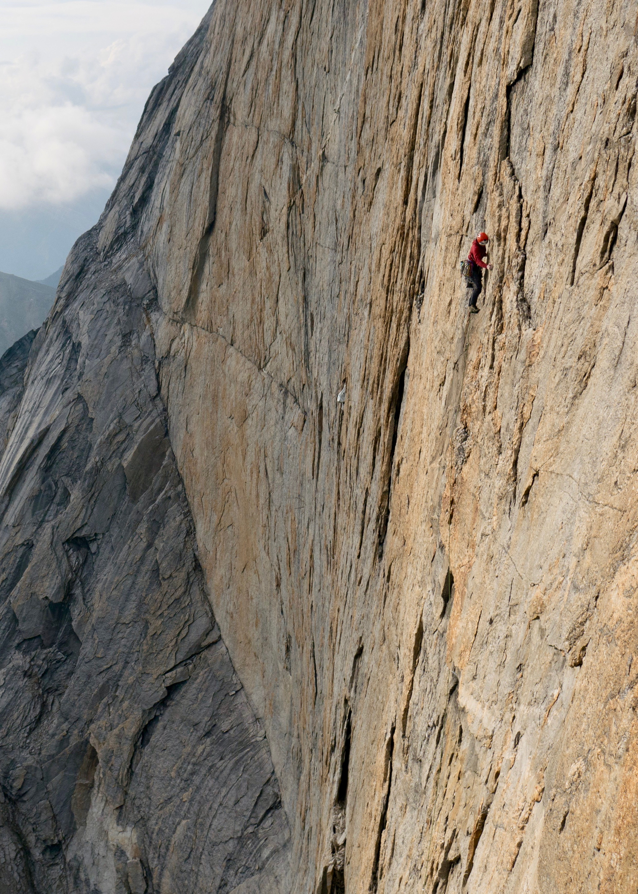

I enjoy climbing in all disciplines from backwoods bouldering to granite big walls. Many of my most memorable days climbing have been spent on Cannon Cliff in the White Mountains of New Hampshire. In 2017, David Bain, Gabriel Boning, Zebediah Engberg, and I traveled to the Brooks Range in Northern Alaska. There, we completed the first ascent of the West Face of Xanadu via our route Golden Petals. Zeb wrote a trip report appearing in the 2018 American Alpine Journal.
I also love to cook and experiment with new recipes and flavors. I dabble in a variety of fermentations but my main fascination is with bread. I maintain a hearty sourdough starter named Bart who never fails to deliver. My favorite types of loaves are rosemary olive, toasted sesame seed, & rye.